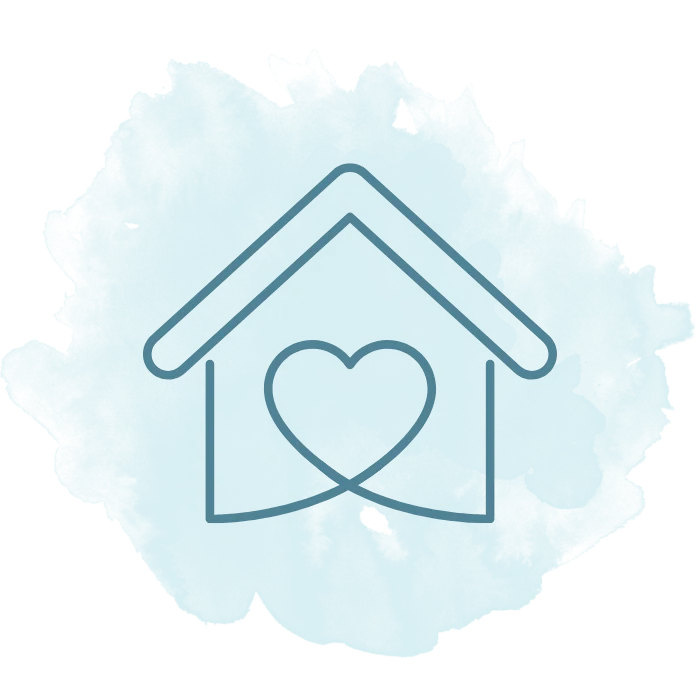

Familiäre Atmosphäre
Kleine Gruppen ermöglichen persönliche Beziehungen.
Unsere ambulant betreuten Wohngemeinschaften bieten Menschen mit Pflege- oder Unterstützungsbedarf ein liebevolles Zuhause in familiärer Atmosphäre. Statt anonymer Heimstrukturen erwartet Sie bei uns ein Alltag mit Selbstbestimmung, Geborgenheit und echtem Miteinander.

Niemand möchte gerne nur eine Nummer sein. Deshalb bestehen unsere Wohngemeinschaften aus einem kleinen, familiären Kreis mit maximal acht Bewohnerinnen und Bewohnern. Präsenzkräfte sind rund um die Uhr vor Ort. Die pflegerische Versorgung übernimmt unser erfahrenes Team ambulanter Pflegekräfte.
Kleine Gruppen ermöglichen persönliche Beziehungen.
Bewohner gestalten den Tagesablauf aktiv mit.
Rund-um-die-Uhr-Präsenz gibt Sicherheit – auch Angehörigen.
Menschen mit Pflegegrad, die Unterstützung im Alltag brauchen und lieber in Gemeinschaft statt allein oder im Heim leben möchten.
Nein. Alles ist in einem Haus organisiert. Sie müssen sich nicht um einen neuen Pflegeplatz kümmern.
Wir unterstützen aktiv bei Anträgen zur Pflegeversicherung, Sozialhilfe, gesetzlicher Betreuung oder im Austausch mit den Krankenkassen.
Ja – sehr gern. Wir laden Sie ein, sich vor Ort ein eigenes Bild zu machen.
Mehr Mitbestimmung, familiäre Atmosphäre und weniger Anonymität – bei gleicher Sicherheit und Versorgung.
Schreiben Sie uns. Wir hören zu und finden gemeinsam die passende Lösung.
Kontakt